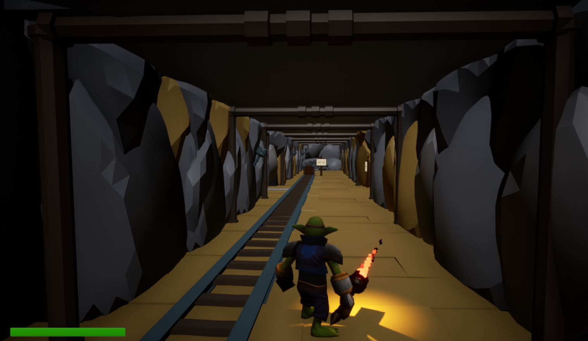
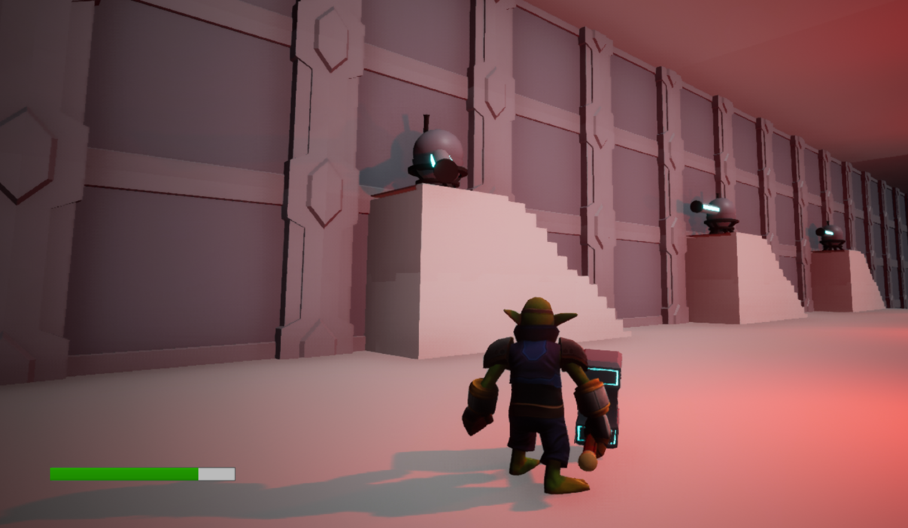

Trials of Deek was another 3D platformer game I created in Unreal. I continued developing my skills whilst making this and experimenting with the UI features much more, as well as trying to create cinematics using Cinemachine.
Watch the demo on YouTube

My favourite part of developing this level was creating the laser beams as they combined my skills in Unreal's particle system as well as my skills in blueprint. These lasers were implemented not only into a gun for the player to use, but also AI Turrets.
Watch the demo on YouTube